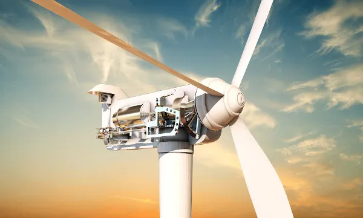
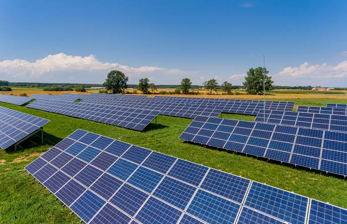
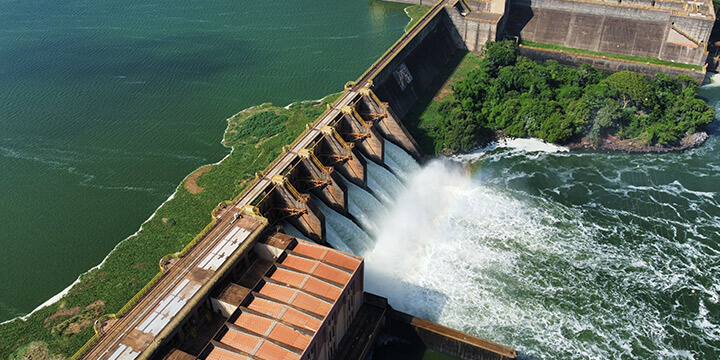

A eletricidade move o mundo moderno, mas você sabe como ela realmente é gerada? Seja bem-vindo ao Blog Energia. Nosso objetivo é desmistificar a ciência por trás da geração de energia: desde o funcionamento de grandes usinas solares e hidrelétricas até projetos práticos de geração caseira (DIY) e as tecnologias revolucionárias do futuro. Explore nossos artigos e descubra como a energia transforma a nossa sociedade.

A energia eólica é um tipo de energia renovável gerada da força dos ventos. A estrutura em que ocorre a conversão da energia cinética em eletricidade é chamada de aerogerador ou turbina eólica. Trata-se de uma energia consideravelmente mais barata do que as demais, e que não gera emissão de poluentes na atmosfera. Por outro lado, as estruturas instaladas causam ruídos e impactam diretamente a fauna local, podendo levar à morte de pássaros e morcegos.
Uma vez produzida, a eletricidade é conduzida por meio dos dutos, localizados no interior da torre, para dois transformadores antes de ser enviada à rede, um está conectado à turbina e o outro concentra toda a energia gerada no parque eólico. Finalmente, a rede de distribuição faz com que a energia eólica seja distribuída para os consumidores finais.

Uma usina solar é uma instalação projetada para converter a radiação solar (composta por luz, calor e radiação ultravioleta) em eletricidade capaz de abastecer residências, comércios, indústrias ou mesmo redes de distribuição. Essas usinas podem variar de pequenos sistemas residenciais a grandes parques solares, compostos por centenas ou milhares de painéis instalados em áreas abertas. Independentemente do porte, contribuem para a produção de energia limpa e renovável, ajudando a reduzir emissões de gases de efeito estufa, diversificar a matriz energética e gerar empregos em diferentes etapas como construção, operação e manutenção.
| Vantagens | Desafios |
|---|---|
| VantagensDesafiosFonte Renovável e Inesgotável: Não emite gases de efeito estufa durante a operação. | Intermitência: Não gera energia à noite e perde eficiência em dias muito nublados. |
| Baixo Custo Operacional: Pouca manutenção mecânica necessária em sistemas fotovoltaicos. | Ocupação de Solo: Requer grandes extensões de terra. |
| Instalação Rápida: Construção mais ágil em comparação a usinas hidrelétricas ou nucleares. | Armazenamento: Baterias de grande porte para armazenar o excesso ainda possuem custo elevado. |

A energia hidráulica (ou hídrica) é a eletricidade gerada a partir da força do movimento da água. É uma das fontes renováveis mais utilizadas no mundo, responsável por grande parte da matriz elétrica do Brasil.
| Vantagens | Desafios |
|---|---|
| VantagensDesafiosEnergia Limpa: Não emite gases de efeito estufa na operação. | Impacto Socioambiental: O alagamento de áreas para o reservatório pode deslocar populações e afetar a fauna/flora. |
| Alta Eficiência: Consegue transformar mais de 80% da energia mecânica da água em eletricidade. | Dependência do Clima: Períodos severos de seca reduzem a capacidade de geração de energia. |
| Reservatório Multifuncional: O lago pode ser usado para irrigação, controle de cheias e abastecimento de água. | Alto Custo Inicial: A construção da infraestrutura e da barragem exige investimentos bilionários. |